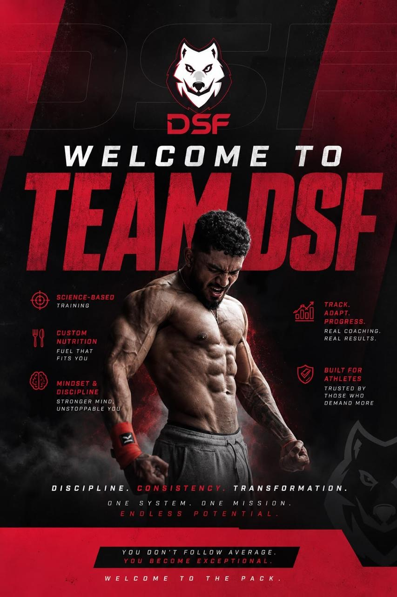

Meet your coach
No one came to rescue me. I had to rebuild myself.
I'm Dion Samuel, a lifestyle coach dedicated to helping people become the strongest version of themselves: physically, mentally and emotionally.
My journey didn't begin in the gym. It began on the football field, where I poured everything I had into the sport. When a career-ending injury took that away from me, I felt completely lost. It was one of the darkest periods of my life. I felt invisible, pushed into a corner with no way out.
That's when I found the gym.
What drew me in wasn't just the physical transformation. It was the process. I learned that meaningful change doesn't happen overnight. It comes from showing up consistently, even on the days you don't feel like it. I fell in love with the work, because every rep, every meal and every disciplined decision was shaping a stronger version of me.
For the past six years, I've helped people transform not just their bodies, but their lifestyles. My goal isn't simply to help you lose weight or build muscle. It's to teach you the habits, mindset and discipline that create lasting change, so you can become the best version of yourself.
I'm someone who believes in showing up, every single day. And because I hold myself to that standard, I'll make sure you do too.
If you're feeling stuck, overwhelmed, or like you're in that same dark corner I once found myself in, know this: you don't have to stay there. This time, I'll help pull you out, and together, we'll build a version of you that you're proud of.
Dion Samuel · Founder, Dion Samuel Fitness